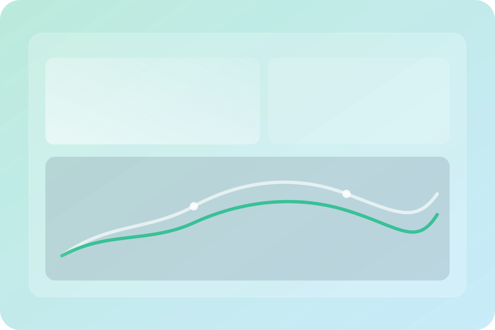
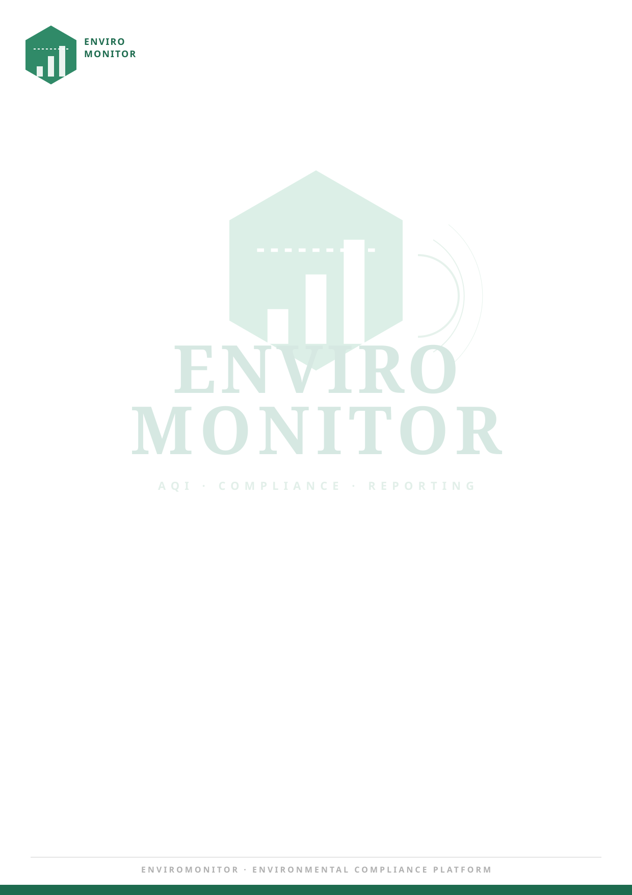

Real-time AQI monitoring with live data from trusted sources. Flawless synchrony between industrial complexes and regulatory agencies. Zero friction. Absolute transparency.
Comprehensive environmental monitoring solution designed for industries and regulatory agencies
Real-time monitoring of environmental parameters with automated compliance reporting and alert systems.
Centralized monitoring platform for regulatory bodies to track industry compliance and manage environmental data.
Seamless connection with environmental sensors and monitoring devices for automated data collection and analysis.
Automated report generation, regulatory filing, and compliance tracking to reduce manual workload and ensure accuracy.
Every tool required for strict environmental adherence, wrapped in a phenomenal interface.

Real-time sparklines, dynamic radial gauges, and complete PM10 / PM2.5 tracking integrated gracefully into one dashboard.

Agencies push data, industries receive it instantly. The latency is practically zero.
Generate perfectly formatted state-compliance reports with a single click.
A flawless pipeline from physical field sensors to regulatory compliance desks.
State-certified monitoring bodies establish secure profiles and register sensory deployment locales to the platform.
Environmental readings (SO2, NO2, AQI) are fed directly into the cloud matrix, securely timestamped and immutably stored.
Linked corporate sectors instantly map this data against legal thresholds on their live tracking dashboard.
Verified, tamper-proof compliance protocols are executed via automated official reports.
Monitoring agencies schedule on-site ambient checks for industries, ensuring timely field verification and proactive compliance action.